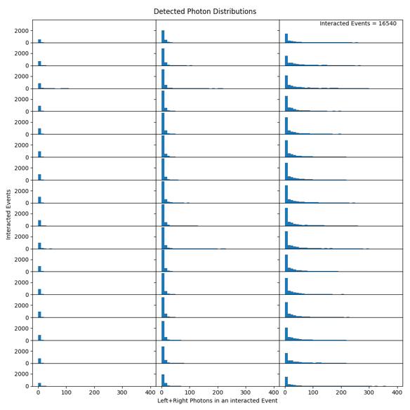
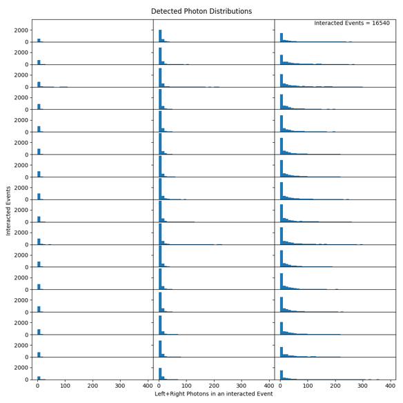
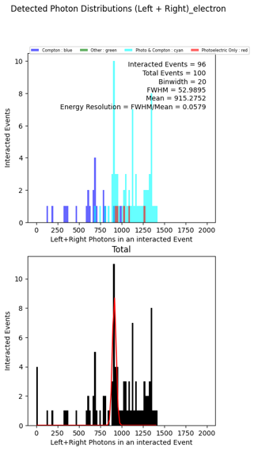
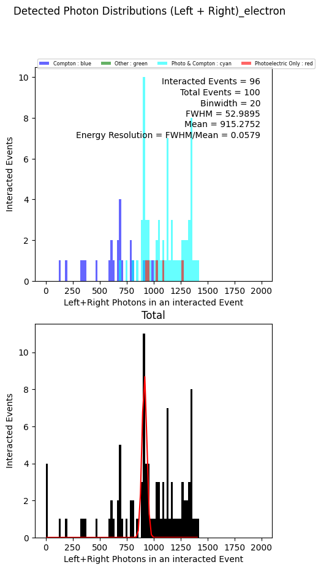
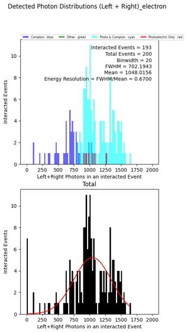
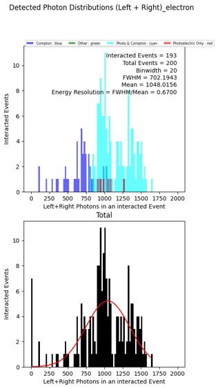

PlasticPET Selected Plots
- *Some plots have very poor statistics, but I haven't yet had a chance to regenerate them...
- If you would like to use those, please tell me, and I will generate them ASAP (will take a day or two, since simulation is fairly slow).
- Some images are hidden by a dropdown, since they are not directly relevant, but are needed to show full progression.
SETUP
Geometry
- I am assuming Mr. Proga has supplied this to satisfaction...
Cross-Section & Material Definition
- EJ208 & SiPM Response


- Geant4 Implementation of Polyvinyltoulene (PVT) against NIST standards:


- Geant4 Implementation of EJ208 (addition of Pb) against NIST standards:


Primitives
- Example Creation/Production & Detection Plots; to motivate looking at sum histograms.
 

Surface Treatment*
Light Yield across Varying Plastic Roughness | Motivate using Polished Crystal
- VK_sigmaalpha = 12 degrees, EJ_sigmaalpha =
[2deg, 12deg]respectively. These values are from a previous G4 paper that used them to discriminate between rough and polished surfaces.


- VK_sigmaalpha = 0.0001, EJ_sigmaalpha =
[0.0001,1.3deg,4deg,6deg,8deg,12deg,30deg]respectively. All with 200 events. Note EJ208 is set at 100% reflectivity specially for these tests! VK reflectivity is as measured.
Images


 

- EJ & VK_sigmaalpha =
[1.3deg, 12deg], respectively.
Images
 
